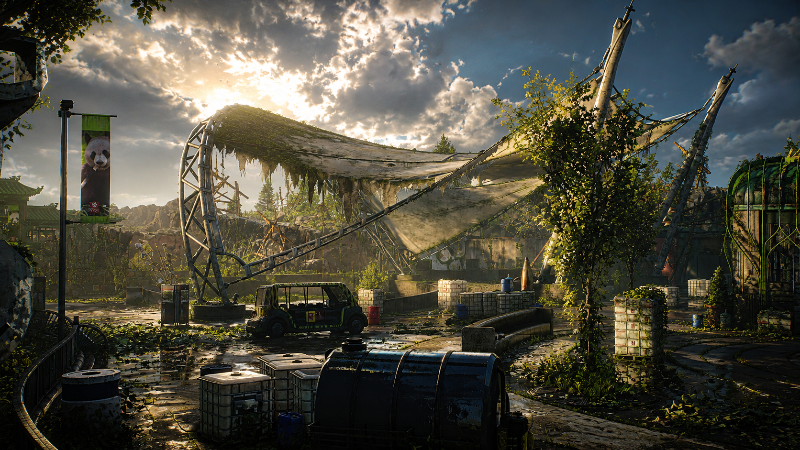

Lendária / Black Tusk
Ambiente aberto e controle de spawn
Diferente de missões mais fechadas, Manning National Zoo expõe o grupo a áreas largas e múltiplas direções. Isso torna posicionamento e leitura de spawn ainda mais importantes.
Builds de controle, Skill Damage e Sniper funcionam muito bem porque permitem limpar ameaças sem exposição desnecessária. O grupo deve avançar por etapas e evitar correr para o próximo objetivo.
Controle
Spawns
Área aberta
Sobrevivência
Ver builds recomendadas